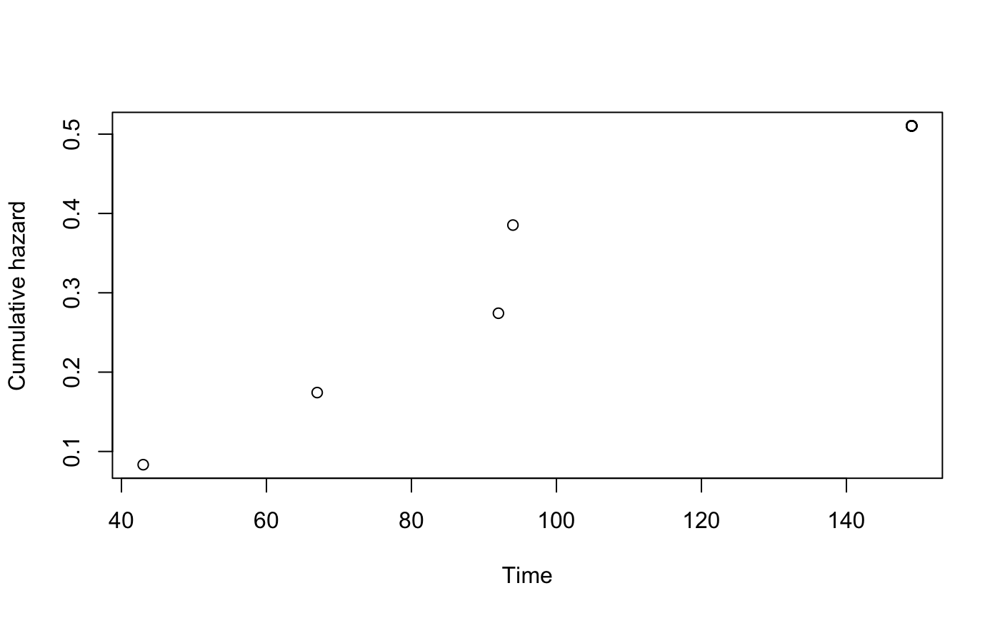

Calculates the cumulative hazard rate (Nelson-Aalen estimator)
nelsonaalen(data, timevar, statusvar)
| data | A data frame containing the data. |
|---|---|
| timevar | The name of the time variable in |
| statusvar | The name of the event variable, e.g. death in |
A vector with nrow(data) elements containing the Nelson-Aalen
estimates of the cumulative hazard function.
This function is useful for imputing variables that depend on survival time. White and Royston (2009) suggested using the cumulative hazard to the survival time H0(T) rather than T or log(T) as a predictor in imputation models. See section 7.1 of Van Buuren (2012) for an example.
White, I. R., Royston, P. (2009). Imputing missing covariate values for the Cox model. Statistics in Medicine, 28(15), 1982-1998.
Van Buuren, S. (2018). Flexible Imputation of Missing Data. Second Edition. Chapman & Hall/CRC. Boca Raton, FL.
require(MASS)#>#> #>#> #> #>leuk$status <- 1 ## no censoring occurs in leuk data (MASS) ch <- nelsonaalen(leuk, time, status) plot(x = leuk$time, y = ch, ylab='Cumulative hazard', xlab='Time')### See example on http://www.engineeredsoftware.com/lmar/pe_cum_hazard_function.htm time <- c(43, 67, 92, 94, 149, rep(149,7)) status <- c(rep(1,5),rep(0,7)) eng <- data.frame(time, status) ch <- nelsonaalen(eng, time, status) plot(x = time, y = ch, ylab='Cumulative hazard', xlab='Time')